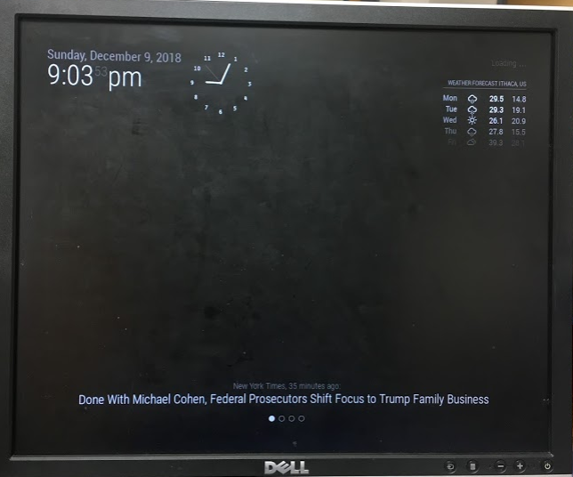
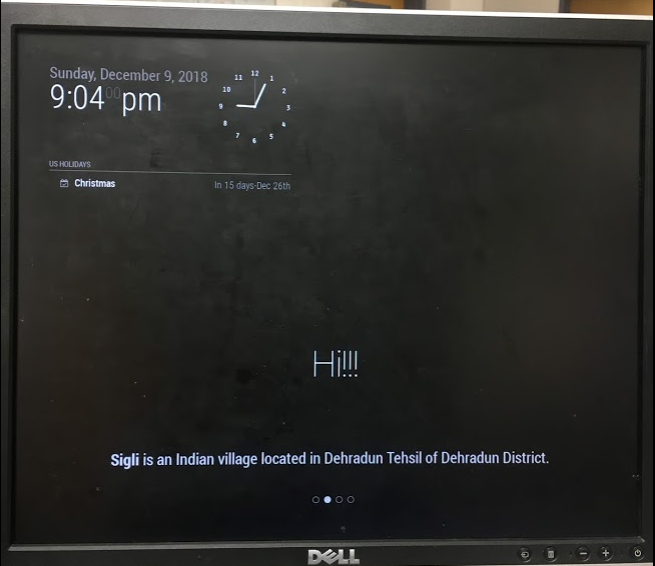
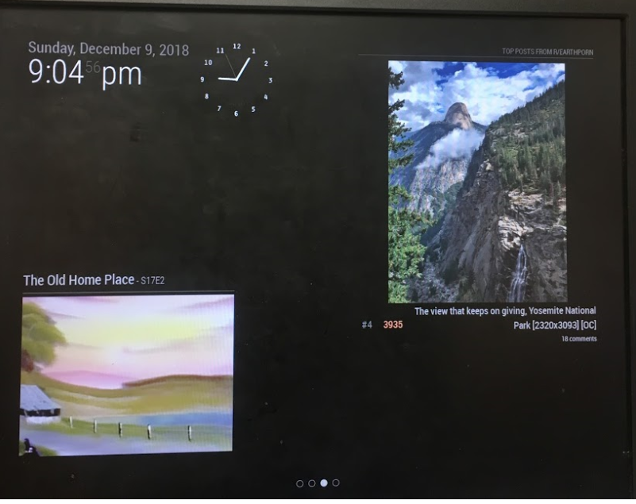
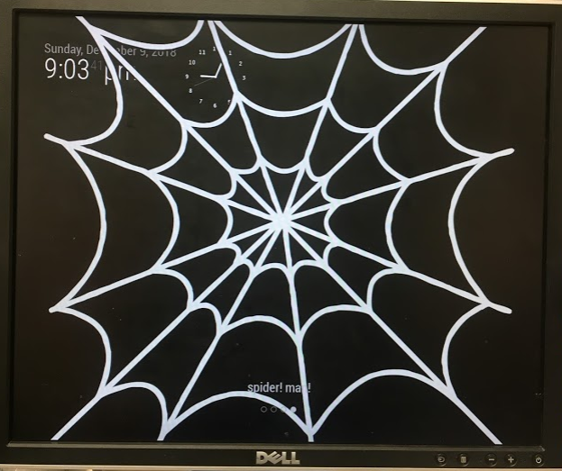

Designing a beautiful and informative user experience.
Goals
We aimed to create a mirror capable of user interaction. We wanted a sleek user interface that displayed information and provided entertainment for the user.
System Overview
Our system consisted of a one-way mirror, placed on top of a monitor. Our monitor displayed 4 different "levels," each level consisted of different modules such as the time, weather forecast, and the newsfeed. We had a PiCamera mounted on the top of the monitor. We used OpenCV to recognize gestures, and these gestures controlled an aspect of the user interface. We additionally had push buttons connected to our Raspberry Pi which also controlled the user interface.
Software for the UI
We decided to start with an open source Magic Mirror platform on Github. Our other option would be to create the UI ourselves using Pygame, but we decided that the Magic Mirror platform from Github would be more elegant and give us more options. The download process for the Magic Mirror platform is supposed to be simple, but caused us a lot of errors, as outlined in our challenges page. The app wrapper around MagicMirror is Electron, and you start your modules using the command "npm start". The MagicMirror platform started with the following default modules: clock, calendar, current weather, weather forecast, news feed, compliments, hello world, and alerts. The modules are each written in Javascript, and then when the module name is added to the config file, it shows up in the UI. After trying out different modules, and seeing what looked good on our mirror, we decided to explore third party modules written for the Magic Mirror. We installed the following additional modules: MMM-BobRoss, a module that displays a random Bob Ross painting MMM-ImagesPhotos, a module that displays an image of our choice. MMM-Pages, a module that allowed us to have different pages/levels of our MagicMirror MMM-page-indicator, a module that displayed which page we were on MMM-wiki, a module that displayed a random wikipedia fact MMM-ModuleToggleButton, a module that displays/hides a module when a hardware button is pressed, we used this module to control our other modules. We changed the config file to add all these modules in, and our different pages of the mirror looked like this:
Page 1
 In the first page, we have the clock module in the top left corner, the current weather and weather forecast in the top right corner, and the newsfeed in the bottom middle. The page indicator is at the bottom, the first circle filled in indicates that we are on the first page.
Page 2
 In every page, we have the clock module again in the top left corner. Right below this, we have our calendar module displaying upcoming holidays, Christmas is coming up!! In the center of our page, we have our compliments module which cycles through a series of different phrases and compliments, including "Hi!!!" and "You look great!". The bottom middle of the page displays a random fact from wikipedia, and below this, we again have our page indicator.
Page 3
 In page 3, we again have our clock, and page indicator. In the top right, we display a top post from Reddit, and in the bottom left, we display a random Bob Ross painting.
Page 4
 Page 4 is our Spiderman themed page! We again display the clock and page indicator. Covering the screen is a spider web image, which we display using the MMM-ImagesPhotos module. Below this, we use the helloworld module to display the text "spider! man!"
Controlling the UI
Results
Here are the results! We achieved a beautiful user interface with four different levels. The levels could be controlled with push buttons, and the clock module could be hidden by holding a finger up in front of the PiCamera. We got our PiCamera to recognize this gesture and the buttons, and used this to control the mirror!